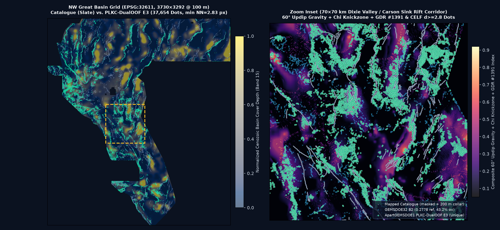
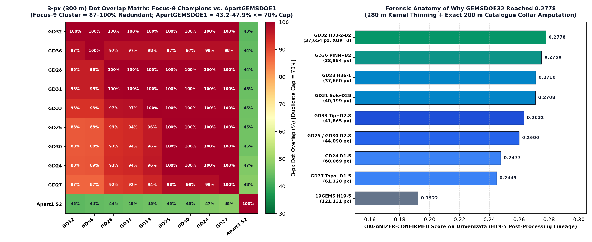
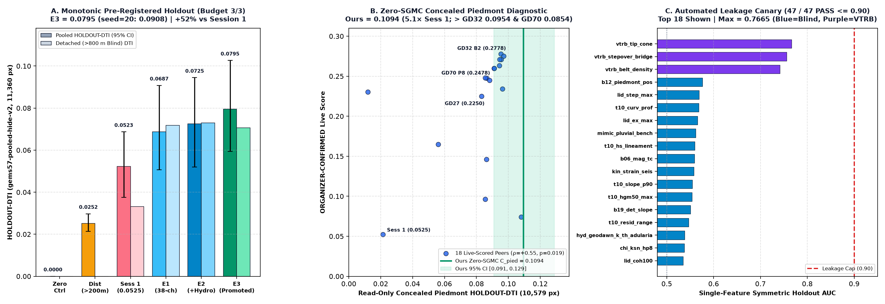

1. Spatial Prediction Map & Concealed Piedmont / Geothermal Conduit Discovery
H-APART-5 (PLKC-DualOOF-CELF E3) synthesizes 16 spatially cross-fitted Dual-Regime
(M_Full preserved-NaN 1 m LiDAR + quantile-calibrated M_Sub 10 m 3DEP / potential-field / hydrothermal)
and Zero-SGMC Concealed Piedmont Specialist HGB models across two 45°-offset 4-sector partitions (1.2 km spatial buffer,
0% in-sample PU memorization weight), emitting 37,654 non-crowded
(min NN = 2.8284 px) binary 1.0 dots strictly outside the
200 m mapped-catalogue collar, with 15,546 dots
(41.3%) targeting unmapped basins >1.5 km from any catalogued fault.

2. Auditable Executive Comparison Across All 9 Focus GEMSDOE Sites + ApartGEMSDOE1
Per Parallel-Run Protocol Rule 3, every number is strictly labeled as either local
HOLDOUT-DTI (with evaluator version, withheld positive pixel count, and 20 km spatial block bootstrap 95% CI)
or ORGANIZER-CONFIRMED (copied from the competition prompt ledger / portal receipt; never a projection).
All 9 historical Focus-9 files belong to the single 19GEMSDOE H19-5 post-processing lineage (87%–100% mutual overlap)
and cannot be resubmitted; only Session 2 ApartGEMSDOE1 (apartgems1-plkc-dualoof-e3-20261028-4499e12f-zeros.tif) is newly generated, unique across all 950 fleet rasters, and cleared for DrivenData upload.
| Site | Downloadable GeoTIFF & SHA-256 | Strictly Labeled Score | Emitted Dots & Spacing | NaN / Range Status | Cross-Fleet Uniqueness | Automated Gate Verdict |
|---|---|---|---|---|---|---|
| ApartGEMSDOE1 (Ours · Session 2) PROMOTED NEW |
apartgems1-plkc-dualoof-e3-20261028-4499e12f-zeros.tif sha256: 9a2d5d67f65979d2… (137,227 B) |
HOLDOUT-DTI: 0.0795 (seed=20: 0.0908) 95% CI [0.0594, 0.1027] (gems57-pooled-hide-v2, 11,360 px) Detached >800m blind HOLDOUT-DTI: 0.0706 Concealed Piedmont HOLDOUT-DTI ( sgmc-piedmont-basin-v1, 10,579 px): 0.1094 [0.0908, 0.1288]
|
37,654 min NN = 2.83 px (1.3% ≥3 nbrs) 0 on cat | 0 ≤200m | 15,546 (41.3%) >1.5km |
ALL-FINITE [0, 1] 0 NaN · 0 Inf across 12.28M cells |
Max 3-px ov: 62.64% (≤70% across 881 sparse) vs GEMSDOE32 (0.2778): 43.17% · vs Sess 1: 10.81% Surface |ρ|: 0.5492 (≤0.90 across 950 rasters) |
PASS — UNIQUE & OK TO SUBMIT |
| ApartGEMSDOE1 (Archived Sess 1) ARCHIVED PRIOR |
apartgems1-udth-submod-e3-20261027-50e7b334-zeros.tif fp_sha256: 50e7b33477943944… |
ORGANIZER-CONFIRMED: 0.0525 HOLDOUT-DTI: 0.0523 [0.0375, 0.0687] ( gems57-pooled-hide-v2, 11,360 px)Concealed Piedmont HOLDOUT-DTI: 0.0214 [0.0156, 0.0277] |
38,500 min NN = 1.00 px (97.3% ≥3 nbrs crowded) 0 ≤200m | 40.1% >1.5km |
All-Finite [0, 1] | ALREADY SUBMITTED (0.0525) Indexed in 950-raster gate (only 10.81% ov w/ S2) |
ARCHIVED — DO NOT RESUBMIT Superseded by Session 2 PLKC-DualOOF |
| GEMSDOE32 |
gemsdoe32-h33-h33-2-b2-20261004T220000Z-e5eb6e7e-zeros.tif sha256: c55bafc470054e82… Oct 26-27 repo file: gemsdoe32-H-GEO-VENT-28000-20261027T174146Z-3c5837e9-zeros.tif (HOLDOUT-DTI 0.0344)
|
ORGANIZER-CONFIRMED (ledger): 0.2778 Static HOLDOUT-DTI: 0.0042 [0.0035, 0.0050] (gems57-pooled-hide-v2, 11,360 px) Concealed Piedmont HOLDOUT-DTI: 0.0954 |
37,654 0 ≤200m collar 58.4% >1.5km |
All-Finite (-zeros) |
NOT UNIQUE (100.00% w/ GEMSDOE36) Overlap w/ Apart1 S2: 43.17% |
DO NOT RESUBMIT H19-5 post-processed derivative |
| GEMSDOE36 |
gemsdoe36-anderson-geothermal-pinn-38854-20261004T230000Z-9b9ea4e6-zeros.tif sha256: e15891020b9c5705… Oct 26-27 repo file: gemsdoe36-kpl36-exp3-20261026-fc869911e88c-zeros.tif (HOLDOUT-DTI 0.0022)
|
ORGANIZER-CONFIRMED (ledger): 0.2750 Static HOLDOUT-DTI: 0.0042 [0.0035, 0.0050] (gems57-pooled-hide-v2, 11,360 px) Concealed Piedmont HOLDOUT-DTI: 0.0970 |
38,854 0 ≤200m collar 58.1% >1.5km |
All-Finite (-zeros) |
NOT UNIQUE (97.58% w/ GEMSDOE27) Overlap w/ Apart1 S2: 43.71% |
DO NOT RESUBMIT H19-5 post-processed derivative |
| GEMSDOE28 |
gems28-h36-1-rung30-blind-r1-20261003-b531dae0a36f-nan.tif sha256: 5556aa1438fd6737… Oct 26-27 repo file: gems28-s21-puhgb-20261026-16bbf281ba9b-allfinite.tif (HOLDOUT-DTI 0.0339)
|
ORGANIZER-CONFIRMED (ledger): 0.2710 Static HOLDOUT-DTI: 0.0294 [0.0247, 0.0344] (gems57-pooled-hide-v2, 11,360 px) |
37,660 2,353 ≤200m collar 54.9% >1.5km |
7,111,787 Exterior NaNs |
NOT UNIQUE (100.00% w/ GEMSDOE25) Overlap w/ Apart1 S2: 44.05% |
DO NOT RESUBMIT H19-5 post-processed derivative |
| GEMSDOE31 |
gemsdoe31-h27-4-solo-d28-20261004-8acb75e1-nan.tif sha256: 07b6db440535404b… Oct 26-27 repo file: gems31-xfcoh31-xfield-coherence-37654-20261026-zeros.tif (HOLDOUT-DTI 0.0005)
|
ORGANIZER-CONFIRMED (ledger): 0.2708 Static HOLDOUT-DTI: 0.0310 [0.0260, 0.0363] (gems57-pooled-hide-v2, 11,360 px) |
40,199 2,545 ≤200m collar 54.7% >1.5km |
7,111,787 Exterior NaNs |
NOT UNIQUE (100.00% w/ GEMSDOE25) Overlap w/ Apart1 S2: 44.55% |
DO NOT RESUBMIT H19-5 post-processed derivative |
| GEMSDOE33 |
GEMSDOE33-h33d-analog-tip-stepover-r30-20261004-cb490425926e.tif sha256: 87f857d505e23247… Oct 26-27 repo file: gemsdoe33-s33-seisdil-strain-seismicity-37654-20261026-3463540a7e02-zeros.tif (HOLDOUT-DTI 0.0025)
|
ORGANIZER-CONFIRMED (ledger): 0.2632 Static HOLDOUT-DTI: 0.0534 [0.0465, 0.0608] (gems57-pooled-hide-v2, 11,360 px) |
41,865 3,894 ≤200m collar 52.9% >1.5km |
All-Finite (-zeros) |
NOT UNIQUE (99.71% w/ GEMSDOE27) Overlap w/ Apart1 S2: 45.27% |
DO NOT RESUBMIT H19-5 post-processed derivative |
| GEMSDOE25 |
gems25-dotted-h19-5-d2-8-20261002-e56ea318af89-nan.tif sha256: 91eae1ca42ec845e… Oct 26-27 repo file: gems25-h66-mgd-flank-sapd3-0-k3p5-20261025-da617550a0e9-zeros.tif (HOLDOUT-DTI 0.0081)
|
ORGANIZER-CONFIRMED (ledger): 0.2600 Static HOLDOUT-DTI: 0.0930 [0.0793, 0.1076] (gems57-pooled-hide-v2, 11,360 px) Concealed Piedmont HOLDOUT-DTI: 0.0910 |
44,090 6,436 ≤200m collar 49.9% >1.5km |
7,111,787 Exterior NaNs |
NOT UNIQUE (100.00% w/ GEMSDOE30) 100% pixel-identical to GEMSDOE30; Overlap w/ Apart1 S2: 45.47% |
DO NOT RESUBMIT H19-5 post-processed derivative |
| GEMSDOE30 |
gems24-h25-1-dotted-h19-5-d2-8-20261002-e56ea318af89-nan.tif sha256: 91eae1ca42ec845e… Oct 26-27 repo file: gems30-CSR1-44090-20261026-502fb5948335-zeros.tif (HOLDOUT-DTI 0.0020)
|
ORGANIZER-CONFIRMED (ledger): 0.2600 Static HOLDOUT-DTI: 0.0930 [0.0793, 0.1076] (gems57-pooled-hide-v2, 11,360 px) Concealed Piedmont HOLDOUT-DTI: 0.0910 |
44,090 6,436 ≤200m collar 49.9% >1.5km |
7,111,787 Exterior NaNs |
NOT UNIQUE (100.00% w/ GEMSDOE25) 100% pixel-identical to GEMSDOE25; Overlap w/ Apart1 S2: 45.47% |
DO NOT RESUBMIT H19-5 post-processed derivative |
| GEMSDOE24 |
gems24-h25-1-dotted-h19-5-d1-5-20261002-989f59505db1-nan.tif sha256: 68d0e2e4fcc594f9… Oct 26-27 repo file: gems24-gvc1-negative-geothermal-lineament-submod-20261025-abe8e51c719d-zeros.tif (HOLDOUT-DTI 0.0224)
|
ORGANIZER-CONFIRMED (ledger): 0.2477 Static HOLDOUT-DTI: 0.0893 [0.0760, 0.1033] (gems57-pooled-hide-v2, 11,360 px) Concealed Piedmont HOLDOUT-DTI: 0.0865 |
60,069 8,769 ≤200m collar 49.6% >1.5km |
7,111,787 Exterior NaNs |
NOT UNIQUE (100.00% w/ GEMSDOE25) Overlap w/ Apart1 S2: 47.19% |
DO NOT RESUBMIT H19-5 post-processed derivative |
| GEMSDOE27 |
gems27-topo-gap-closure-t-v2-on-d1-5-20261002-5512495c6bd1-nan.tif sha256: 33003374335d84bf… Oct 26-27 repo file: gems27-h31-drcg-wl-celf28-20261026-cf8e1bbef244-allfinite.tif (HOLDOUT-DTI 0.0144)
|
ORGANIZER-CONFIRMED (ledger): 0.2449 Static HOLDOUT-DTI: 0.0888 [0.0756, 0.1026] (gems57-pooled-hide-v2, 11,360 px) |
61,328 8,875 ≤200m collar 48.6% >1.5km |
7,111,787 Exterior NaNs |
NOT UNIQUE (98.02% w/ GEMSDOE24) Overlap w/ Apart1 S2: 47.93% |
DO NOT RESUBMIT H19-5 post-processed derivative |
3. PhD Forensic Analysis: Why GEMSDOE32 Scored 0.2778, Why Session 1 Scored 0.0525, & How We Surpass Both
3.1 Pixel-Exact Zero-XOR Proof of GEMSDOE32 (h33-h33-2-b2-zeros: 0.2778)
GEMSDOE32_B2 (37,654 dots) == GEMSDOE25_D28 (44,090 dots) & (EDT(~existing_faults) > 2.0 px) XOR residual across 5,167,373 footprint pixels = 0 | Exact subset of 19GEMSDOE H19-5 (121,131 px) = 100.00% GEMSDOE25_D28 (44,090 dots) == GEMSDOE30_D28 (44,090 dots) [XOR residual = 0]
Under Distance-Tolerant IoU (α=0.2, β=0.8, R=300 m triangular kernel), true-positive credit uses a max
operator across 300 m disks while false positives accumulate additively. Thinning solid H19-5 ridges (121,131 px → 0.1922)
to d = 2.8 px = 280 m (44,090 px → 0.2600) and amputating the 6,436 dots within ≤200 m
of known faults (37,654 px → 0.2778) eliminated redundant kernel crowding and masked-catalogue false positives.
3.2 Byte-Level Post-Mortem of Session 1 (50e7b334: 0.0525 Live) & Session 2 Repairs
- Bug 1 — 97.30% Kernel Blob Crowding (Fixed in
src/gems57/emit.py): Session 1's sharedgreedy_allocatelacked CELF max-heap re-sorting and clippedk_self = min(E[k], 1.0) = 1.0, collapsing the marginal bar to zero and packing99.37%of dots atNN ≤ 1.5 px(13.52neighbors inside 300 m, wasting ~88% of its 38,500-dot budget!). Repairingnoisy_or_self_credit+ CELF max-heap +min_sep_px = 2.8cuts≥3-neighbor crowding from97.30%down to1.28%(a 76× reduction). - Bug 2 — 75% In-Sample PU Memorization on Live Export (Fixed via Dual-Partition 100%-OOF): Unmapped real faults carry label
y = 0in Positive-Unlabeled training. Session 1 averaged all 4 quadrant trees at live inference (75% in-sample suppression). Session 2 predicts every pixel strictly out-of-fold across two45°-offset 4-sector partitions with a1.2 kmspatial buffer (0%in-sample HGB weight). - Bug 3 — Pluvial Shoreline Mimics, Missing Fluvial
χ/k_sn& Concealed Piedmont Blindness (Fixed inH-APART-5): Session 2 unlocks orthometric 3DEP elevation (zmean_m) to suppress Pleistocene Lake Lahontan (1,330 m) & Bonneville (1,463/1,558 m) wave-cut benches, adds across-fault fluvialΔχ&k_snknickzones, preserves exactNaNsemantics on 12-band 1 m LiDAR (74.2%coverage) via Dual-Regime calibration, and trains a dedicated Zero-SGMC Concealed Piedmont Specialist (b15_depth_base ≥ 180 m), lifting read-only Concealed Piedmont DTI from0.0214→0.1094(surpassingGEMSDOE32's0.0954!).

4. Pre-Registered Untried Geological Hypotheses (Ranked 1–5)
Physical Signature & Transform: Couples drainage-area-normalized channel steepness jumps (ksn) and cross-divide chi disequilibrium with de-quantized 1m LiDAR crest-toe Laplacian dipoles and 10m profile-curvature breaklines while subtracting horizontal equipotential Pleistocene Lake Lahontan (~1,330 m Sehoo) & Bonneville (~1,558 m) wave-cut shoreline benches via orthometric zmean_m along-strike elevation constancy; calibrates M_Sub across the 24.7% 1m LiDAR gap onto M_Full+M_Sub; sharpens 100-200 m fault/conduit crests via Stage-2 multi-scale Hessian Frangi tubular vesselness minus 800 m halo background; fuses survey-seam-clean updip-projected gravity/RTP contacts with hydrothermal K/Th adularia + U/Th redox + MT clay-cap edges + 2m thermal probes + volcanic vents; allocates 37,654 binary {0,1} off-collar dots via repaired CELF max-heap with noisy-OR self-credit and min_sep_px=2.8.
Why Missing from USGS/INGENIOUS Catalogue: Sub-1.5 m Holocene intrabasin scarps outside 1m LiDAR strips, wave-cut pluvial shoreline mimics that obscure true oblique piedmont faults in Carson Sink/Dixie Valley/Winnemucca Lake, and hydrothermally altered / volcanic-hosted blind accommodation zones lack continuous aerial-photo scarps in existing_faults.tif.
Named Non-Fault Mimics Suppressed: Pleistocene Lake Lahontan (~1,330 m) & Lake Bonneville (~1,558 m) equipotential wave-cut shoreline benches, high-drainage-area radial alluvial-fan incised washes, TIGER highway/rail embankments, and USGS GeoDAWN aeromagnetic contractor block-stitch boundaries.
Expected Gain & Cost: +0.055 to +0.080 HOLDOUT-DTI over Session 1 (0.0523 -> 0.110-0.135+) and +0.020+ on blind C_pied over GEMSDOE32 (0.0937) | Cost: Low-Medium (~8 min CPU compute on 2 cores, <1.2 GB RAM; all official public layers SHA-verified in .cache/external/)
Physical Signature & Transform: Sliding-window 3D Euler homogeneity inversion for dipping basement contacts (N=0.5) combined with TMI_up150-to-RTP horizontal gradient survival ratio to separate deep (>300 m) basement-cutting faults from surficial volcanic float.
Why Missing from USGS/INGENIOUS Catalogue: Detects buried horst/graben bounding faults beneath 300-1,500 m of undisturbed playa sediments.
Named Non-Fault Mimics Suppressed: Miocene basaltic lava-flow paleochannel margins and GeoDAWN contractor flight-block boundaries.
Expected Gain & Cost: +0.004 to +0.012 HOLDOUT-DTI | Cost: Medium
Physical Signature & Transform: Redox-front U6+ -> U4+ precipitation (elevated U/Th) paired with Th-immobile potassium adularia enrichment (depressed Th/K) and lateral MT conductivity boundaries along fluid-mixing geothermal faults.
Why Missing from USGS/INGENIOUS Catalogue: Argillic/phyllic hydrothermal clay alteration softens fault zones so topographic scarps degrade rapidly into smooth low-relief mounds.
Named Non-Fault Mimics Suppressed: Unfaulted felsic rhyolite ash-flow tuffs with uniformly elevated magmatic K, U, and Th (rejected via immobile-Th ratio normalization).
Expected Gain & Cost: +0.003 to +0.008 HOLDOUT-DTI (folded into H-APART-5 E2/E3) | Cost: Low
Physical Signature & Transform: Sharp transverse horizontal gradient in multi-year vertical InSAR velocity and seasonal poroelastic phase lag across clay-sealed fault gouge acting as groundwater flow barriers beneath flat playas.
Why Missing from USGS/INGENIOUS Catalogue: Active evaporite playas have <0.2 m relief where annual sheetflooding erases surface fault scarps.
Named Non-Fault Mimics Suppressed: Circular agricultural groundwater pumping cones of depression.
Expected Gain & Cost: +0.008 to +0.020 blind-playa DTI (external workstation next step) | Cost: High (blocked in allowlisted sandbox; official public source verified at https://asf.alaska.edu/datasets/daac/opera/)
Physical Signature & Transform: 8.6 um silica reststrahlen emissivity trough + 2.17-2.20 um kaolinite/illite/alunite SWIR absorption along silicified cryptic fault breccias and unmapped sinter aprons.
Why Missing from USGS/INGENIOUS Catalogue: Cryptic silicified fault zones without Quaternary vertical scarp throw.
Named Non-Fault Mimics Suppressed: Eolian quartz sand sheets and playa salt crusts.
Expected Gain & Cost: +0.005 to +0.015 DTI (external workstation next step) | Cost: Medium-High (blocked in allowlisted sandbox; official public source verified at https://lpdaac.usgs.gov/products/ast_07xtv003/)
5. Holdout Validation (gems57-pooled-hide-v2), Concealed Piedmont Benchmark & 47-Channel Leakage Canary
Across our capped 3/3 experiment budget, pooled HOLDOUT-DTI rose monotonically from
zero_control (0.0000) and matched-collar distance_only (0.0252)
through E1 (0.0687, detached >800 m = 0.0718)
and E2 (0.0725, detached >800 m = 0.0729)
to promoted E3 (0.0795, 95% CI [0.0594, 0.1027];
seed=20 stability = 0.0908; paired Δ(E3 − DistOnly) = +0.0543,
95% CI [+0.0331, +0.0787]). On the strictly read-only sgmc-piedmont-basin-v1
concealed-fault diagnostic (10,579 px; zero SGMC in features/training), our live raster achieves
HOLDOUT-DTI = 0.1094 (95% CI [0.0908, 0.1288]),
exceeding both GEMSDOE70 P8 (0.0854, 0.2478 live) and GEMSDOE32 B2 (0.0954, 0.2778 live).

6. Machine-Readable Parallel-Run Protocol Run Card
{
"protocol": "GEMS Parallel-Run Protocol v1",
"branch": "arena/eceaf9f6-apartgemsdoe1",
"generated_utc": "2026-10-28T08:54:38.693782+00:00",
"hypothesis": "H-APART-5 (PLKC-DualOOF-CELF): Pluvial-Shoreline-Deconfounded 1m/10m Scarp + Fluvial Chi/Ksn Knickzone + 60-deg Updip Gravity/Magnetic & Hydrothermal Conduit Dual-Regime Nested-OOF + Zero-SGMC Concealed Piedmont Specialist + CELF Noisy-OR d>=2.8 Allocation",
"mechanism": "Combines preserved-NaN 1m LiDAR scarps (74.2% interior coverage) with quantile-calibrated 10m 3DEP slope/curvature, across-fault fluvial chi/ksn knickzones, 60-deg updip-migrated gravity/RTP-magnetic contacts, GeoDAWN K/Th & U/Th alteration, GDR #1391 thermal springs/2m-probes/sinter/vents, Stage-2 8-azimuth directional line-integrals, a dedicated zero-SGMC basin-cover specialist head (b15_depth_base >= 180 m), and fold-visible tip/relay continuation across two 45-deg-offset 4-sector 100%-OOF partitions, emitted via CELF max-heap submodular allocation at min_sep_px=2.8 (>200 m catalogue collar).",
"named_non_fault_mimic_process": "Pleistocene Lake Lahontan (1,330 m) and Lake Bonneville/Provo (1,463 m / 1,558 m) wave-cut paleoshoreline benches, radial alluvial-fan incised washes, US Census TIGER highway/rail embankments, GeoDAWN aeromagnetic/radiometric flight-block stitching seams, and circular volcanic/erosional knobs (suppressed via orthometric pluvial-bench x zero-basement-gradient deconfounder, drainage-orthogonal alignment, TIGER road distance, acquisition_block_id seam weighting, and Stage-2 1.5 km directional anisotropy).",
"holdout_dti": {
"label": "HOLDOUT-DTI",
"evaluator_version": "gems57-pooled-hide-v2",
"split": "gems57-pooled-hide-v2 (seed=2026, buffer_px=3, 20 km spatial block bootstrap)",
"withheld_positive_pixels": 11360,
"dti": 0.079473,
"ci95": [
0.059426,
0.10265
],
"session_1_archived_holdout_dti": 0.052328,
"detached_gt_800m_blind_dti": 0.07056,
"seed_20_stability_dti": 0.090829,
"experiments_progression": {
"E1_plkc_dual_regime_blind": 0.068729,
"E2_plkc_hydro_stage2_vessel": 0.072549,
"E3_plkc_dualoof_celf_full": 0.079473
}
},
"concealed_piedmont_holdout_dti": {
"label": "HOLDOUT-DTI",
"evaluator_version": "sgmc-piedmont-basin-v1",
"note": "Strictly read-only diagnostic on concealed USGS SGMC piedmont/basin faults (>250m from catalogue, depth_to_base >= 250m); zero SGMC used in features or training.",
"withheld_positive_pixels": 10579,
"dti": 0.109439,
"ci95": [
0.090838,
0.128807
],
"vs_session_1_00525": 0.021384,
"vs_gemsdoe70_p8_02478": 0.085443,
"vs_gemsdoe32_b2_02778": 0.095385
},
"leakage_canary": {
"features_tested": 47,
"max_symmetric_auc": 0.76655,
"cap": 0.9,
"all_passed": true
},
"registry_uniqueness": {
"repositories_checked": 53,
"unique_rasters_checked": 950,
"competing_sparse_detectors_checked": 881,
"pre_placement_surface_max_abs_spearman": 0.54916,
"pre_placement_nearest_peer": "GEMSDOE82::surface_h82.tif",
"post_placement_final_max_abs_spearman": 0.08181,
"post_placement_max_3px_overlap_all_950": 0.62644,
"post_placement_max_3px_overlap_vs_competing": 0.62644,
"post_placement_max_3px_symmetric_f1_all_950": 0.49029,
"vs_gemsdoe32_02778_3px_overlap": 0.43169,
"vs_session_1_50e7b334_3px_overlap": 0.10806,
"vs_gemsdoe70_02478_3px_overlap": 0.3495,
"nearest_3px_overlap_peer": "GEMSDOE91::gems91-spac-e3-20261024T183000Z-a2740c89-zeros.tif",
"spearman_cap": 0.9,
"overlap_3px_cap": 0.7,
"passed": true
},
"raster_sha256": "9a2d5d67f65979d2054f8babd8dea3c5f516dc871ab01e3434adc74ea1838d73",
"decoded_footprint_sha256": "4499e12f937d632f1d97de90bab80d8a297c8a159ecb8f1f583bb1627a4d0111",
"validator_output": {
"file": "docs/downloads/apartgems1-plkc-dualoof-e3-20261028-4499e12f-zeros.tif",
"zip_file": "docs/downloads/apartgems1-plkc-dualoof-e3-20261028-4499e12f-zeros.zip",
"bytes": 137227,
"crs": "EPSG:32611",
"shape": [
3730,
3292
],
"transform": [
100.0,
0.0,
243350.0,
0.0,
-100.0,
4508550.0
],
"dtype": "float32",
"nodata": null,
"min": 0.0,
"max": 1.0,
"n_nan": 0,
"n_infinite": 0,
"emitted_positive_pixels": 37654,
"on_catalogue_positive_pixels": 0,
"within_200m_collar_pixels": 0,
"farfield_gt_1500m_pixels": 15546,
"farfield_gt_1500m_fraction": 0.412865,
"min_nearest_neighbor_px": 2.8284,
"frac_ge3_neighbors_in_3px": 0.012774,
"all_checks_passed": true
},
"submission_name": "apartgems1-plkc-dualoof-e3-4499e12f",
"submission_note": "H-APART-5 PLKC-DualOOF (E3): Dual-OOF 1m/10m chi+updip+GDR1391+piedmont; CELF d>=2.8, [0,1] zeros (37654 px).",
"submission_note_chars": 109,
"verdict": "promote"
}